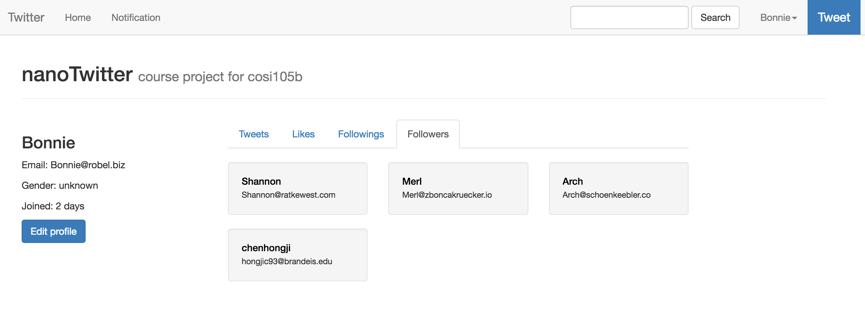

nanotwitter
NanoTwitter is the course project of COSI105b, The current version supports operations include following users, tweet, like tweets, reply tweets and search.
The project is deployed to Heroku. URL: Nano Twitter
Click here to see the Portfolio Page.
Getting started
To get started, you have to download other two repositories: nanotwitter-homeline and nanotwitter-notification
This repository is the application server for nano Twitter, nanotwitter-homeline is response for homeline update, nanotwitter-notification is responsible for creating notifications.
The project is depend on Redis and RabbitMQ, so in order to run locally, you have to first start redis and rabbiymq.
To install Redis and RabbitMQ, just run brew install redis and brew install rabbitmq
Run these commend in command line: redis-server and rabbitmq-server and then run ruby consumer.rb or heroku local in nanotwitter-homeline directory and heroku local in nanotwitter-notification directory. Finally, start the application server by ruby nt.rb or heroku local in your nanotwitter directory.
(You must first start redis and rabbitmq before starting the application services because )
Tech Stacks
Backend
| Type | Tech |
|---|---|
| language | Ruby |
| web framework | Sinatra |
| ORM | ActiveRecord |
| database | PostgreSQL, Redis |
| middleware | RabbitMQ |
| networking | HTTP, WebSocket |
Frontend
| Type | Tech |
|---|---|
| language | javascript, HTML, css, embeded ruby |
| UI | bootstrap |
| MVC framework | Backbone.js |
| networking | HTTP, WebSocket |
Functionalities and Implementations
Home Timeline Query
There are two kinds of home timeline in NT, user home timeline and global home timeline.
user home timeline is for a specific user. It shows all tweets from the user's followings and himself.
global home tiemline is for the entire app. It shows the newest 50 tweets all users have tweeted.
implementation: Redis caches the id list of each users's home timeline. At first there is nothing in Redis, when the first request comes, it will get the following users' ids from socialgraph service and then get the home timeline tweets from database according to these user ids, while at the same time, import these data into Redis.
Check homeline.rb to see detail implementations.
(Social graph service is not a real service. It is a class designed specialized for all kinds of social relationship operations)
Social Graph
It is not a real service, but the logic is highly transparent. It only provides APIs to the outside like "add follow", "delete follow", "get followings", "get followers". In redis, each user's following and follower lists are cached by the user id. When the server wants to get the information at the frist time, the cache can not hit, so it will first get data from the "Follows" table in Postgre Database, and import the data into Redis.
When a user add a new follow or delete a following user, the server will first delete the record in database and also modify the social grpah cached in Redis. Each update on the social graph only relates to two users, the time complexity is O(1), so the server just do these operations synchronously and respond after these operations are finished.
Check socialgraph.rb to see detail implementations.
Timeline Query
Timeline is different from home timeline. It is one user's own tweet history. Also, each users' tweet ids are cached in Redis.
Check timeline.rb to see detail implementations.
Personal Information
Personal information includes username, birthday, join time, gender and so on. Although these information is only a small piece of data, but it will occur on almost every page you visit. In order to eliminate the duplicate database queries, a caching is implemented. These information is imported into Redis when a user logged in.
In NT, personal information also includes user's favourite tweets. It is because, like username, join time and other datas, favourite tweets also occurs on a lot of page you visit. In home page, home timeline has to distinguish whether a tweet is favored by the user, also in timeline and tweet search result page. So even though "favored tweets" is not a true "personal information", I also treat it like one in implementation.
Every users' favored tweet ids are cached in Redis, together with other personal informations.
Check personalinfo.rb to see detail implementations.
Tweet Posting
Without Redis, posting a new tweet is a very simple logic, just to add a new record in database.
Now, when ever a new tweet is created, you have to update the homeline of that user and all followers' home timeline, the time complexity is O(n). That is time costing task, especially when a user has a lot of following users (n is very large). To reduce the response time, timeline update is an asynchronous job. The server will publish the update message into RabbitMQ, and nanotwitter-homeline is responsible to subscribe these messages and execute the update operations.
More About Queueing
Not only posting new tweets will update user timeline, other operations like "Follow" and "Unfollow" will also have an effect on user timeline. When a user follow a new user, the new following user's timeline will be added into the user's home timeline and when a user unfollow a following user, the timeline of the following user will be deleted from the user's home timeline.
All these operations are executed asynchronouly by RabbitMQ.
Check taskproducer.rb, it is the class for publishing messages.
Notifications
Currently, the server will only create notifications when a new follow relationship is created or a tweet is replied.
Nanotwitter-notification is responsible for these. When ever there is a need to do this, he application server will just put this job into RabbitMQ, and nanotwitter-notification will subscribe these messages and create notifications.
Real Time Notifications
Nanotwitter-notification will also push a message to the client when he/she is followed or replied by WebSocket. (the message will be displayed on screen)
Here is the way to connect to the target of the message:
Every time a client is setup, it will establish a web socket connection to the notification service with a user id. At the server, all connections are persisted in a connection pool. If you want to send a message to a specific user, just find out the connection with the userid and push it.
Interesting Engineering
Naming in Redis and RabbitMQ
In Redis and RabbitMq, naming follows a certain rule.
| Information | Key in Redis |
|---|---|
| personal information | user |
| favored tweets | user |
| following list | user |
| follower list | user |
| home timeline | user |
| timeline | user |
| Queue Content | Queue Name |
|---|---|
| {method: method, params: params} | homeline:update |
| {method: method, params: params} | notification:create |
Every task in queue is a JSON string, represents the method to be executed and the corresponding parameters.
Database query optimization
Take timeline query as an example. We already have tweet ids stored in Redis, so we only need to get the tweet record according to the id list.
SQL executed is like this: select * from tweets where id in (id_list)
While that is not enough, we have to sort the tweets according to create_times in descendent order because users want to see a timeline sorted in chronological order. Then the sql comes into this
select * from tweets where id in (id_list) order by create_time
run exlain query to see the database execution plan, you will see:
While actually in our app, tweet id is an auto increment primary key, it means that sort by create_time is the same as sort by id. Then we can transform the sql into this.
select * from tweets where id in (id_list) order by id
run explain query and you will find the sort phase is eliminated.
Timeline Rendering at Frontend
The front-end development uses Backbone.js. It is a light-weight MVC framwork. The view is depend on data models.
On home page, the display of timeline uses pagination. Every time user click the "Load more" button, the browser will fetch the next few tweets and add them to the end of a tweet list. The view part is always listening to any changes of the model, and when the tweet list changes, it will automatically rerender the page.
Posting a new tweet is very similar. The only difference is that it add the new tweet to the head of the list, in order to maintain the chronological order.
Screen Shots
home page for no logged in users
profile view
followings and followers
searching

tweet and reply
real time notifications
Team Members
- Hongji Chen
- Samuel Akerman
Date
- Dec 8th 2016